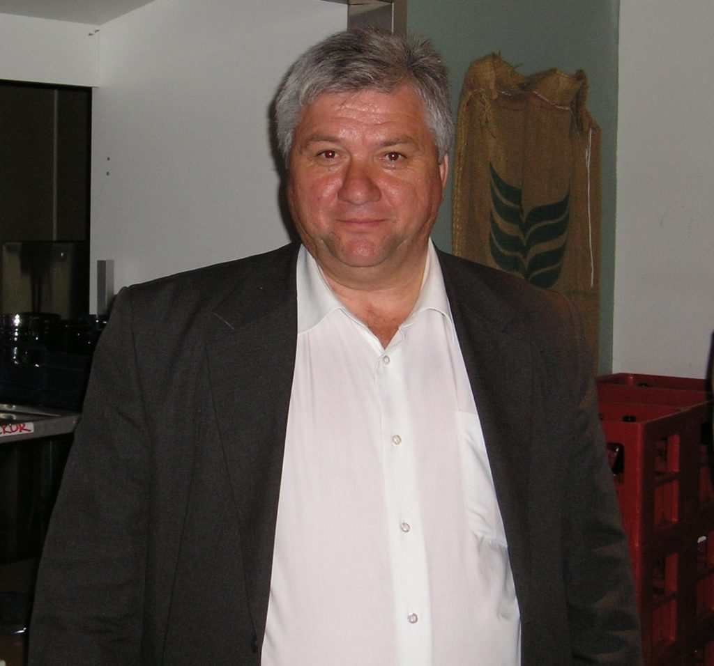

<section class="objects">

    <div class="objects__container  _container">

        <div class="objects__content  _content">

            <h3>
                Наши объекты
            </h3>

            <h4>
                Посмотрите наши объекты
            </h4>

            <div class="objects__slider">
                <a class="objects__btn  about__btn  active__objects__btn">О компании</a>
                <a class="objects__btn">2014</a>
                <a class="objects__btn">2015</a>
                <a class="objects__btn">2016</a>
                <a class="objects__btn">2017</a>
                <a class="objects__btn">2018</a>
                <a class="objects__btn">2019</a>
                <a class="objects__btn">2020</a>
                <a class="objects__btn">2021</a>
            </div>

            <div class="objects__inner">

                <div class="about__company">

                    <div class="left-aside">
                        
                        <p>Урчик Иван Иванович</p>
                        <p class="osnovatel">Основатель предприятия «Термо-Крым»</p>
                        <p>ООО «Термо-Крым» работает на Крымском рынке с 2003 года.</p>
                        <br>
                        <p>Предприятие было создано для реализации совместных проектов с ЗАО «Термо» и ДП «СМУ Термо»
                            (г. Луганск, Украины) по поставке, монтажу и техническому обслуживанию транспортабельных
                            блочно-модульных котельных на природном газе и твердом топливе.</p>
                    </div>

                    <div class="center-aside">
                        <p>В 2003 году транспортабельную блочно-модульную котельную производства ЗАО «Термо» мощностью
                            500 кВт, смонтированную ООО «Термо-Крым» для школы в с. Янтарное Красногвардейского района,
                            принимал президент Украины Леонид Данилович Кучма.</p>
                        <br>
                        <p>Вскоре возникла потребность в квалифицированной эксплуатации уже введенных в эксплуатацию
                            котельных. </p>
                        <p>Так с 2006 года наше предприятие стало осваивать новый вид деятельности –
                            производство, поставка и транспортировка тепловой энергии.</p><br>
                        <p> В 2007 году ООО «Термо-Крым» произвело первую сертифицированную как единое готовое изделие
                            транспортабельную блочно-модульную котельную на природном газе мощностью 200 кВт. И это
                            стало новым витком в истории нашего предприятия.</p>
                        <br>
                        <p>В 2010 году предприятие является членом Ассоциации энергоаудиторов Украины. С этого периода
                            мы, кроме прочего, начали оказывать услуги по энергетическому менеджменту и аудиту.</p>
                    </div>

                    <div class="right-aside">
                        <p>С 2014 года ООО «Термо-Крым» осуществляет техническое и сервисное обслуживание, эксплуатацию
                            основного и вспомогательного котельного оборудования учреждений образования и
                            здравоохранения Республики Крым.</p>
                        <br>
                        <p>С 2016 г. предприятие является официальным представителем ООО «Котельный завод «Гарант» (г.
                            Барнаул).</p>
                        <br>
                        <p>В 2017 году предприятие стало членом саморегулируемой организации «Ассоциация Региональное
                            отраслевое объединение работодателей «Строители Крыма». В этом же году мы начали оказывать
                            новый вид услуги — гидравлическое испытание на прочность, плотность и герметичность систем
                            теплоснабжения и отопления с составлением соответствующей технической документацией.</p>
                        <br>
                        <p>С июля 2017 года ООО «Компания Энергокрымтепло» (группа компаний «Термо-Крым» является
                            официальным дилером СП «ТермоБрест» ООО.
                        </p>
                    </div>
                </div> <!-- about__company -->


                <div class="objects__c02"></div>
                <div class="objects__c03"></div>
                <div class="objects__c04"></div>
                <div class="objects__c05"></div>
                <div class="objects__c06"></div>
            </div>

        </div> <!-- objects__content  _content -->

    </div> <!-- objects__container  _container -->

</section>